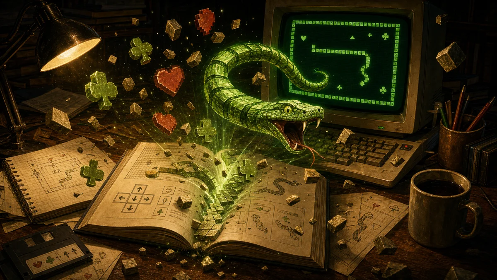

Spelhandleiding
Sneekie is een slang-in-een-doolhofspel uit juli 1988. Je stuurt een groeiende slang door een ommuurde arena en verzamelt ♥ harten. Verzamel alle harten en je gaat door — door 32 levels, opgebouwd uit 8 doolhoflayouts. Let op muren, dodelijke pijlen en smileys die punten kosten. Deze pagina legt alles uit: de besturing, de puntentelling, alle 8 layouts en hoe de 32 levels zijn opgebouwd.

Het doel
Elk level strooit een veld vol ♥ harten door de arena. Eet ze allemaal en het level is gehaald — de resterende bonus wordt bij je score opgeteld, je krijgt een leven, en het volgende level begint. De slang groeit met een segment telkens wanneer hij iets eet, dus het speelveld wordt steeds krapper.
Besturing
| Toets | Aanraken | Wat het doet |
|---|---|---|
| ← ↑ ↓ → | Veeg | Stuur de slang. Hij kan niet direct terug zijn eigen lijf in. |
| elke toets | Tik | Sluit de “Druk op een toets”-vensters tussen levels. |
| Esc | — | Geef op als je vastzit. Kost een leven en start het level opnieuw. |
| F9 | — | Cheat: extra leven. |
| F10 | — | Cheat: level overslaan. |
Een lettertoets indrukken (of tegen een muur sturen) laat je alleen botsen: je blijft staan en verliest een beetje bonus. Onder het scherm staan de kastknoppen: de Groen / Amber / CGA-thema's, een Geluid-schakelaar en Volledig scherm (in volledig scherm houd je Esc ingedrukt om te sluiten — een korte tik werkt nog steeds als “opgeven”).
Het scherm
Het speelveld heeft een rand waar je niet doorheen kunt. De statusbalk onderaan toont:
- Level — in welk van de 32 levels je zit.
- Score / Highscore — je punten; de beste score blijft bewaard.
- Levens — hoeveel pogingen je nog hebt.
- Bonus — een timer die begint op
10000en elke stap aftelt. Haal het level snel en de rest wordt bij je score opgeteld.
Items & punten
| Symbool | Item | Effect |
|---|---|---|
| ♥ | Hart | +10. Verzamel ze allemaal om het level te halen. |
| ♣ | Klaver | +25. Een betere beloning (vanaf level 17 kan een hart er een achterlaten). |
| ☺ | Smiley | −50! — de val. Eentje eten doet pijn en laat je voor niets groeien. Stuur eromheen. |
| ◙ | Steen | Een rotsblok. Geen punten — maar je kunt hem een vakje duwen als de ruimte erachter leeg is. |
| ↑→← | Pijl | Dodelijk. Raak een bewegende pijl en je verliest een leven. |
| │─ | Muur / jezelf | Massief. Je kunt niet een muur of je eigen lijf in — je botst alleen (−bonus). |
Levens
Je begint met 3 levens. Je verliest er een wanneer je doodgaat — door een bewegende pijl te raken, of door met Esc op te geven als je vastzit. Je krijgt er een bij wanneer je een level haalt (en F9 geeft er ook een), dus een vaste speler houdt de teller gezond. Zijn ze op, dan is het game over — daarna kun je opnieuw spelen.
De acht layouts
Elk level is een van deze acht arena's. Layouts 1–4 zijn gewone doolhoven — vastlopen is het enige gevaar. Layouts 5–8 voegen een bewegend gevaar toe. Hieronder zie je clips waarin het spel zichzelf speelt — een automatische slang die harten jaagt, stenen duwt en pijlen ontwijkt:

De open arena
Alleen de vier buitenmuren. Puur harten verzamelen — de vriendelijkste introductie.

Kammen & kruisen
Groepen kamachtige paaltjes en plusvormige kruisen liggen door de kwadranten verspreid.

Het kamerraster
De arena is in kamers verdeeld door verticale en horizontale muren, met in elke muur een doorgang.

Het stenenveld
Een dicht raster van duwbare ◙ stenen. Schuif ze opzij en maak je eigen route naar de harten.

De palenkolommen
Hoge muren hangen vanaf de boven- en onderrand. Gevaar: de openingen schuiven op en neer — een doorgang kan dichtklappen.

De stijgende pijlen
Een open veld met ↑ pijlen die stap voor stap omhoog marcheren. Aanraken is fataal.

De veegpijlen
Een open veld met ←→ pijlen die links en rechts schuiven over elke rij. Tim je oversteek.

De kluis
Verticale muren met kolommen ◙ stenen ertussen — en kruipende openingen. De zwaarste mix in het spel.
De 32 levels
Er zijn maar 8 layouts, dus het spel doorloopt ze vier keer. Elke ronde komen dezelfde arena's terug — maar hoe de slang beweegt, verandert:
- Levels 1–8 — beurt voor beurt. De slang wacht op je toets; neem je tijd (de bonus telt wel af).
- Levels 9–16 — hij beweegt vanzelf. Als je niet binnen het tempo van het level stuurt (
0.4–1.2seconden — sneller in open arena's, ruimer in drukke), gaat de slang zelf door. Je kunt nog steeds elk moment sturen. - Levels 17–32 — de reprise. Levels 17–24 herhalen 1–8 (beurt voor beurt) en 25–32 herhalen 9–16 (zelfbewegend) — met een twist: vanaf level 17 kan een hart een ♣ klaver achterlaten voor extra punten.
| Layout | Gevaar | Beurtlevels | Zelfbewegende levels (tempo) |
|---|---|---|---|
| 1 · Open arena | — | 1, 17 | 9, 25 (0.4 s) |
| 2 · Kammen & kruisen | muren | 2, 18 | 10, 26 (0.6 s) |
| 3 · Kamerraster | muren | 3, 19 | 11, 27 (0.6 s) |
| 4 · Stenenveld | stenen | 4, 20 | 12, 28 (0.9 s) |
| 5 · Palenkolommen | kruipende openingen | 5, 21 | 13, 29 (0.9 s) |
| 6 · Stijgende pijlen | omhoogpijlen | 6, 22 | 14, 30 (1.0 s) |
| 7 · Veegpijlen | zijpijlen | 7, 23 | 15, 31 (1.0 s) |
| 8 · De kluis | stenen + kruipende openingen | 8, 24 | 16, 32 (1.2 s) |
Tips
- Speel snel. De bonus zijn echte punten — treuzelen in level 1 kan tot 10 000 punten kosten.
- Blijf ruim uit de buurt van smileys. Een losse ☺ kost 50 punten en laat je groeien.
- Je sterft niet door je eigen staart — je kunt er alleen niet doorheen. Maar een lange slang sluit zichzelf snel op; als je echt vastzit, beperkt Esc de schade tot een leven.
- Duw stenen doodlopende stukken in om een baan vrij te maken — maar je kunt alleen duwen als het vak erachter leeg is.
- Blijf bewegen in pijlenlevels. Lees de richting van de pijlen en glip door de gaten; blijf nooit stilstaan in een kolom (level 6) of rij (level 7) waar een pijl doorheen veegt.
Over
Sneekie werd in juli 1988 in GW-BASIC geschreven door HerbySoft en gepubliceerd in MS(X)DOS Computer Magazine nr. 25. In 2026 werd de gedrukte listing via OCR teruggehaald en regel voor regel naar deze website geport. Benieuwd hoe het werkt? De Visualizer toont de truc waarbij het scherm het geheugen is, en de Uitleg-editie loopt door de originele code.
